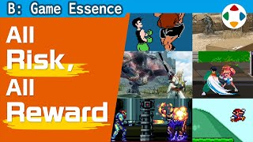
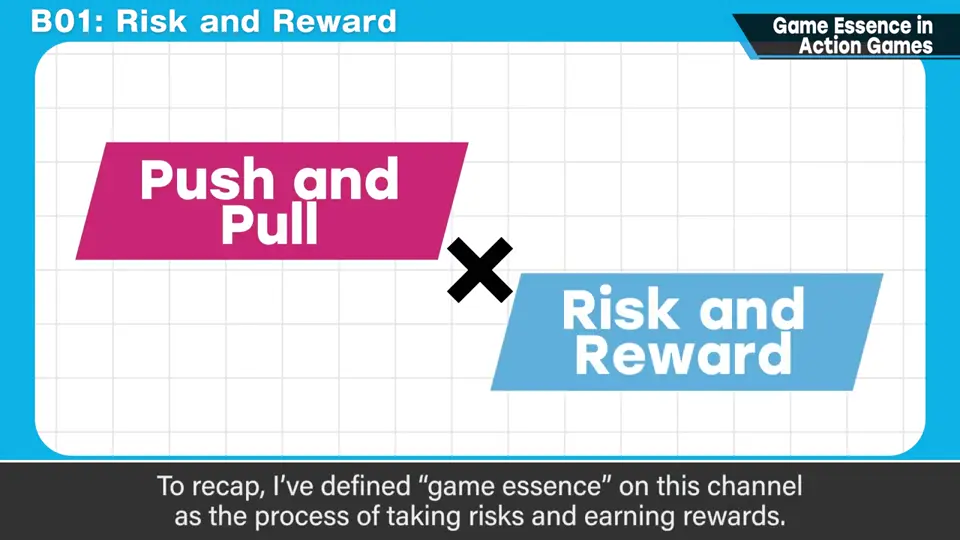
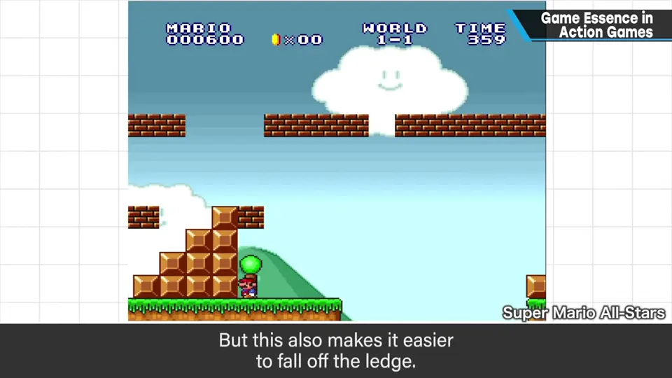
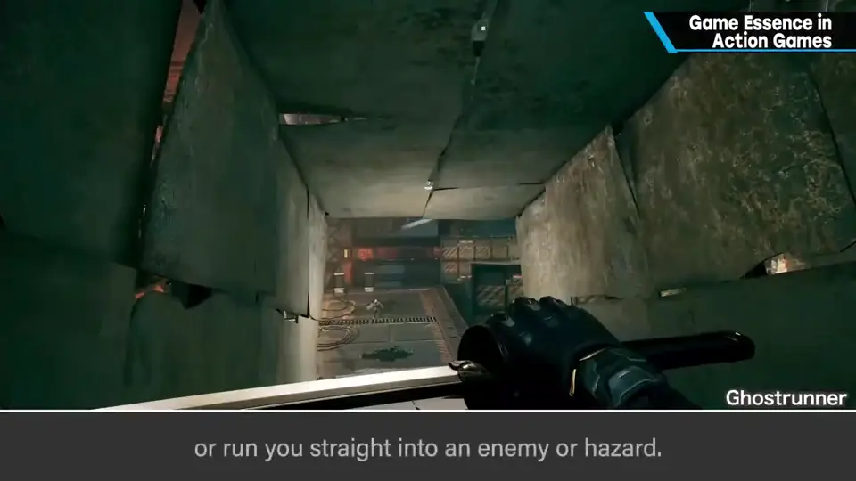
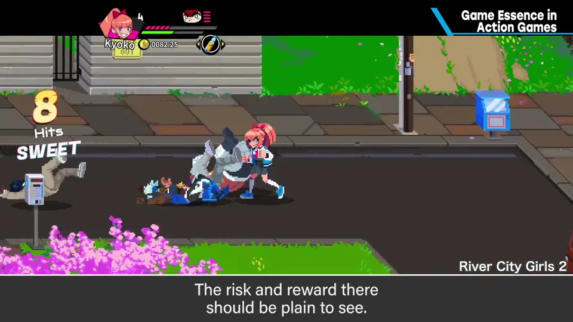
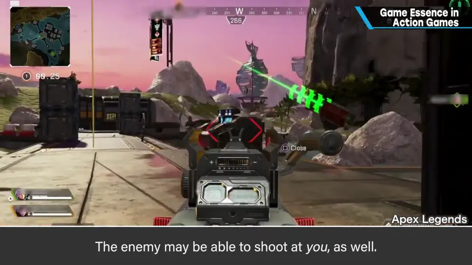
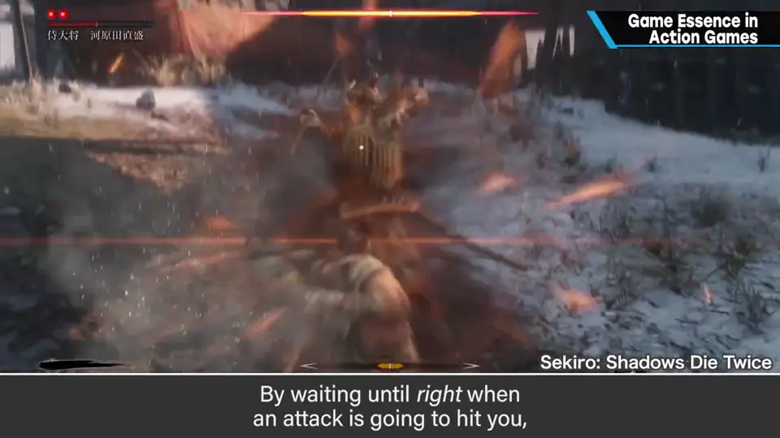
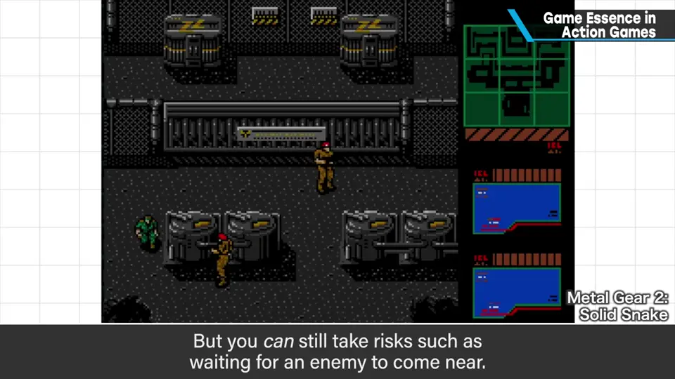

速览
不论横版、俯视还是 3D，带跳跃的动作游戏有各种形态的游戏性，演出也都相当成熟。本期很简单地汇总各种动作游戏的游戏性。前提：本节目把冒风险获得回报定义为游戏性；看下面每个动作时，留意危险与机会都是一体两面：① 跳跃——越贴近崖边起跳越能跨过大坑，但更容易掉下去；② 冲刺——移动更快，但难控制、有破绽、消耗体力，也可能冲进敌人或危险区；③ 靠近才能攻击——离敌人远就打不到，靠近可能被打，但能攻击；④ 用枪射击——能单方面攻击，但可能消耗弹药等资源，远距离时弹数往往少，对方也可能射你，包括站位在内都有风险回报；⑤ 回避——能在千钧一发时闪开，但有行动不自由等缺点；发展形是招架（Parry），把攻击引到最后一刻，是把极高风险在千钧一发间变成回报；⑥ 躲藏——躲着就不能攻击，压低风险回报也减少；等待对手接近也是承受风险。这次不深挖、重在数量。看似理所当然，但各种东西里都有风险与回报，思考各自的意义就更可能做得更好——要超越单纯的模仿。
1. 前提：危险与机会一体两面 0:03
不论横版、俯视还是 3D，带跳跃的动作游戏，其游戏性有各种形态，演出也都相当成熟。这次很简单地汇总各种动作游戏的游戏性。
本节目把冒风险获得回报定义为游戏性。看下面每个动作时，请留意：它们都是危险与机会一体两面。

2. 六种动作的风险与回报 0:48
| 动作 | 回报 | 风险 |
|---|---|---|
| 1. 跳跃 | 越贴近崖边起跳，越能跳过大坑 | 越容易从崖边掉下去 |
| 2. 冲刺（跑） | 移动更快 | 难以控制、产生破绽、消耗体力，可能冲进敌人或危险区 |
| 3. 靠近才能攻击 | 靠近就能攻击（远离则打不到） | 靠近就可能被打 |
| 4. 用枪射击 | 能单方面攻击 | 可能消耗弹药等资源，远距离时弹数往往少；对方也可能射你，站位也算 |
| 5. 回避 | 能在千钧一发时闪开攻击 | 行动变得不自由等缺点 |
| 6. 躲藏 | 躲着时降低风险 | 躲着时无法攻击，回报也减少；等待对手接近也是承受风险 |






3. 超越单纯的模仿 2:25
这次没有逐一深挖，而是重在数量。看似理所当然，但各种东西里都有风险与回报；思考各自游戏性的意义，就更可能把游戏做得更有趣。
自测题
1. 冲刺（跑）的风险与回报分别是什么？
回报：移动更快；风险：难控制、有破绽、消耗体力，可能冲进敌人或危险区。 1:04
2. 「招架（Parry）」为什么好玩？
把攻击引到最后一刻，把极高的风险在千钧一发间变成回报。 2:01
3. 「躲藏」的风险与回报是什么关系？
躲着时无法攻击：压低风险，回报也减少；等待对手接近本身也是承受风险。 2:12